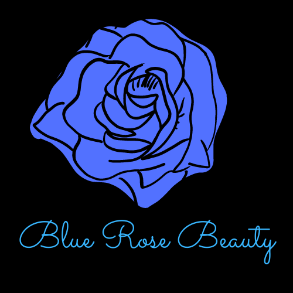

Blue Rose Beauty - Color Street
Our Mission: Color Street is a creative beauty brand with limitless possibilities. We believe in supporting and empowering a person's spirit & individuality. We celebrate entrepreneurs and inspire them to pave the road to personal success.No matter how BIG the dream, how BRILLIANT the sparkle, or how INTENSE the shine, it’s our goal to encourage every individual to ACHIEVE big dreams. Create your own path, grab the wheel, and let Color Street take you there.
A colorful story: Color, music, drama, excitement, and a million faces from every corner of the world! This is NYC, the birthplace of Color Street! It began in 1988, when Fa Park was on a bus stuck in a traffic jam and saw a woman in a nearby cab trying to polish her nails. He thought, “There has to be a better way!” He bought some nail polish and started experimenting with it, starting by painting it on different types of paper. After countless attempts, he finally created a process where although the top was dry, the bottom was still moist and could be adhered to the nail. Mr. Park’s revolutionary vision, a 100% nail polish strip, was born!. Fast forward decades with much hard work to perfect and patent his product, Mr. Park’s innovation has become a leader in the beauty industry. All products are proudly made in the USA—which matters to him, as he has made his American dream a reality. While millions of his nail polish strips are loved and used all over the world, he knew for his dream to come true, he had to open a party-plan division. After a brief but highly successful time in direct sales himself, Mr. Park believed his vision would be an instant success in an environment where his creation can be demonstrated, explained, and admired. 2020 was a year of growth and perseverance for Color Street and our Stylists as we learned to pivot and adapt to the unique obstacles and hardships experienced in our local, national, and global communities. Through these difficult times, and with teamwork, determination, and persistence, we succeeded in making 2020 one for the books. Thank you to all our Home Office staff and Stylists for an incredible year in the face of unprecedented challenges.


© 2021 Trina Richards